    <div class="pg places-page">
        <div class="uk-container uk-container-center">
            <div class="uk-width-small-1-1 uk-width-medium-4-5 uk-container-center">
                <h1 class="uk-text-center">Places to visit</h1>
                <div class="pg-content">
                  <div class="place">
                    
                    <h2>Columbus Lighthouse</h2>
                    <p>Columbus Lighthouse (Spanish: Faro a Colón) is a monument located in Santo Domingo Este, Dominican Republic, in tribute to Christopher Columbus.</p>
                    <p>Construction began in 1986 using plans drawn by Scottish architect J.L. Gleave in 1931, in time for the 500th anniversary of the Discovery of America, the monument was inaugurated in 1992. It was funded by the Latin American states and the total cost of construction was approximately US$70 million.</p>
                    <p>The monument's lighthouse-style features projecting beams of light, forming a cross shape, which are so powerful they can be seen from neighboring Puerto Rico.</p>
                    <p>Containing what are purported to be the remains of Columbus, the monument is both a mausoleum and a museum showcasing objects including a boat from Cuba and Columbian jewelry. Constructed of concrete, the monument is 680 feet (210 m) long.[3] Its architecture is cross-shaped and represents the Christianization of America.</p>
                  </div>

                  <div class="place">
                    
                    <h2>Columbus Alcazar</h2>
                    <p>Columbus Alcazar, located in Santo Domingo, Dominican Republic, is the oldest Viceregal residence in America, and forms part of the Colonial Zone of Santo Domingo World Heritage Site. The building houses the Museo Alcázar de Diego Colón, whose collection exhibits the Caribbean's most important ensemble of European late medieval and Renaissance works of art, which were acquired in the 1950s. </p>

                      <p>The Tapestry collection (spanning from the 15th to 17th centuries) is particularly important and unique in the Caribbean, and includes pieces produced by the Flemish Van Den Hecke family from cartouches created by Charles Le Brun. The Alcázar is the most visited museum in Santo Domingo.</p>
                  </div>

                  <div class="place">
                    
                    <h2>Ozama Fortress</h2>
                    <p>The Fortaleza Ozama (in Spanish; Ozama Fortress in English) is a sixteenth-century castle built by the Spanish at the entrance to Santo Domingo, Dominican Republic, and overlooking the Ozama River. Named after this river, the castle, also referred to as "La Fortaleza" or "The Fortress", is the oldest formal military construction of European origin in America.</p>
                  </div>

                  <div class="place uk-clearfix">
                    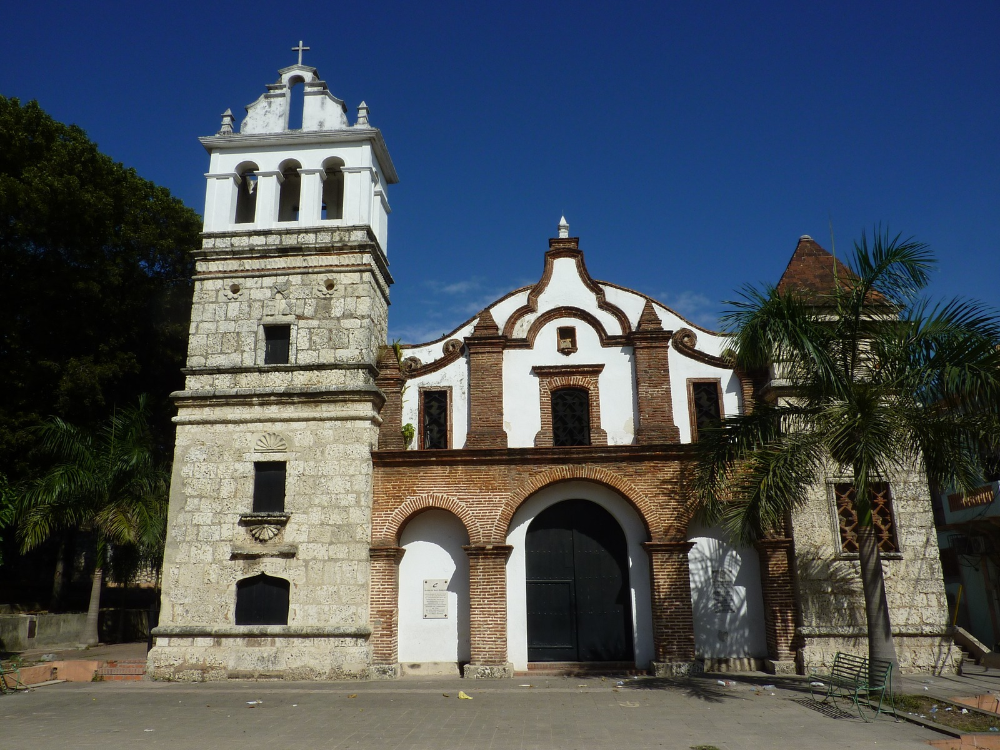
                    <h2>Santa Barbara Church</h2>
                    <p>Build before 1562, over the mine from where were extracted all the materials for the construction of the wall and all the monuments.</p>
                    <p>Was first burned by Sir Francis Drake in 1586 and shortly repaired. An amazing place to visit.</p>
                  </div>

                    <div class="place">
                      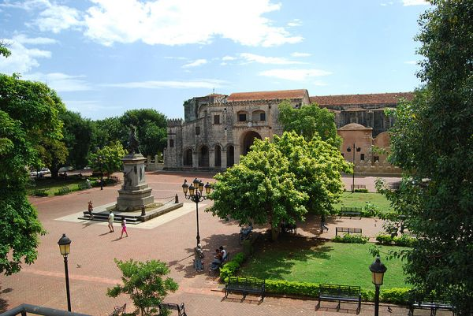
                      <h2>Columbus Park</h2>
                      <p>Parque Colon is the central square of the Ciudad Colonial historic district of Santo Domingo. In its Center stands a late-19th-century statue by French Sculptor Ernest Gilbert of Christopher Columbus, in whose honor the square was renamed in 1887. Previously the square was known as Plaza Mayor.</p>
                        <p>Monuments bordering the square include the Catedral de Santa Maria la Menor [hyperlink to the cathedral in the pycaribbean page] , Santo Domingo's Municipal Palace, and the Palacio Borgella, which once hosted the Dominican Republic's Parliament. Calle del Conde, once the thriving commercial heart of Santo Domingo, starts from Parque Colon and runs to the Puerta del Conde. At the beginning of Calle del Conde is a late-20th-century bust of Bartholomew Columbus, Christopher's brother and the founder of Santo Domingo.</p>
                    </div>

                    <div class="place">
                      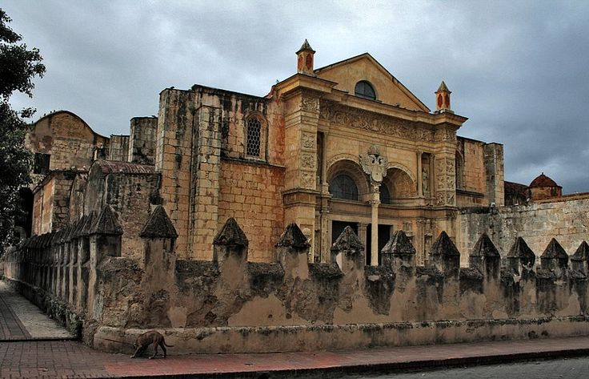
                      <h2>Cathedral of Santa María la Menor</h2>
                      <p>The Cathedral of Santa María la Menor in the Colonial Zone of Santo Domingo is dedicated to St. Mary of the Incarnation. It is the oldest cathedral in the Americas, begun in 1512 and completed in 1540. It is the Cathedral of the Archbishop of Santo Domingo who has the honorary title of Primate of the Americas because Santo Domingo was the first Catholic diocese established in the New World.</p>
                      <p>It is located between Calle Arzobispo Merino and Isabel la Católica, next to Columbus Park in the city of Santo Domingo de Guzman.</p>
                      <p>The Cathedral is fronted with a golden-tinted coral limestone façade, the church combines elements of both Gothic and Baroque with some lavish plateresque styles as exemplified by the high altar chiseled out of silver. There is also a treasury which has an excellent art collection of ancient woodcarvings, furnishings, funerary monuments, silver, and jewelry.</p>
                    </div>

                    <div class="place uk-clearfix">
                      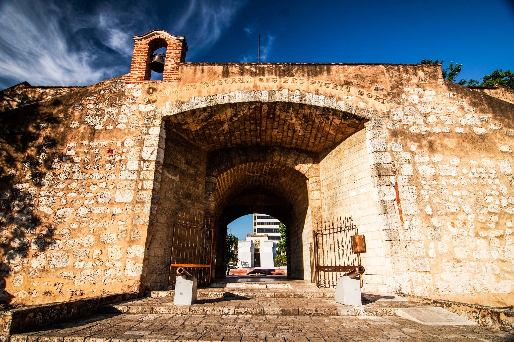
                      <h2>The Count’s Gate</h2>
                      <p>La Puerta del Conde (The Count's Gate) is the site in Santo Domingo, Dominican Republic where Francisco del Rosario Sánchez, one of the Dominican Founding Fathers, proclaimed Dominican independence and raised the first Dominican Flag, on February 27, 1844.</p>
                      <p>The gate is part of a structure called El Baluarte del Conde (The Count's Bulwark), a fort in Ciudad Colonial, the colonial area of Santo Domingo. The fort was part of a larger system of fortifications that ran along a defensive wall which surrounded Ciudad Colonial. The Altar of the Fatherland and Independence Park are located there.</p>
                    </div>

                    <div class="place uk-clearfix">
                      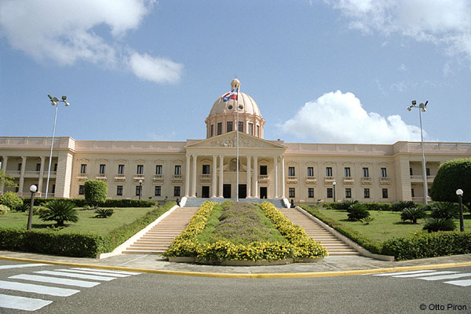
                      <h2>The National Palace</h2>
                      <p>Designed in a restrained neoclassical style by Italian architect Guido D'Alessandro at the behest of Rafael Trujillo, construction started on February 27, 1944 —The centenary of Dominican independence —and was inaugurated on August 16, 1947. Occupying an area of 18,000 square metres and luxuriously appointed throughout, the National Palace is considered one of the most beautiful buildings built in the Dominican Republic.</p>
                    </div>

                    <div class="place">
                      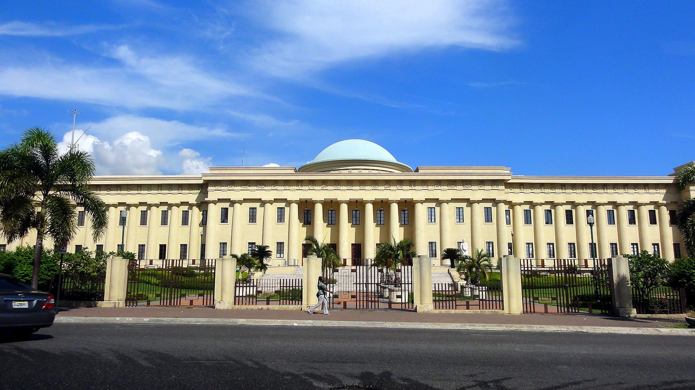
                      <h2>Palacio de Bellas Artes</h2>
                      <p> The Palacio de Bellas Artes (Palace of Fine Arts) is one of the most prominent cultural centers in Santo Domingo. It was inaugurated on May 15, 1956. This impressive building surrounded by gardens, is considered the ultimate expression of architectural resources of its time.</p>
                    </div>

                    <div class="place uk-clearfix">
                      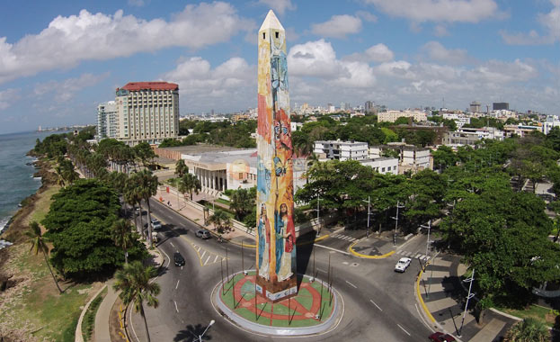
                      <h2>The Obelisk</h2>
                      <p>The obelisk was designed in 1936 in order to celebrate the change of the name of the city. From 1995 on this has become the canvas for important artists. It is one of the most emblematic places of the port.</p>
                    </div>

                    <div class="place uk-clearfix">
                      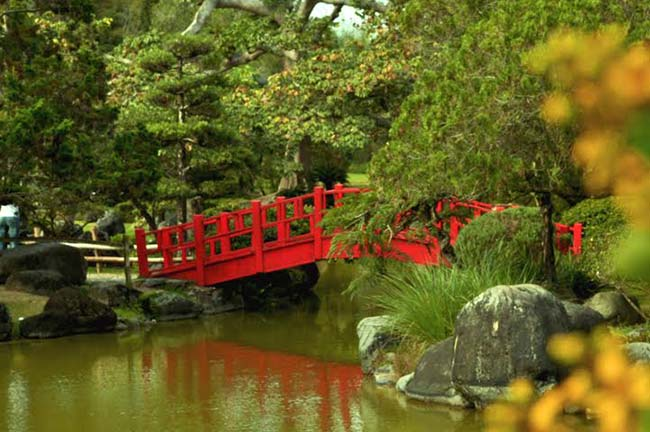
                      <h2>Botanical Garden</h2>
                      <p>The Botanical Garden has been a must for nature lovers and everyone who wants to have peace within chaos in the city since its opening in 1976 during the government of Dr. Joaquín Balaguer. It houses one of the biggest flower clocks in the world (according to their website), a lovely Japanese garden, a section with native plants of the island of Hispaniola, aquatic plants, orchids, a museum with dissected exemplars of plants and a palm area. Don't miss their Japanese garden with its soft grass and the loveliness of the trees.</p>
                    </div>

                    <div class="place">
                      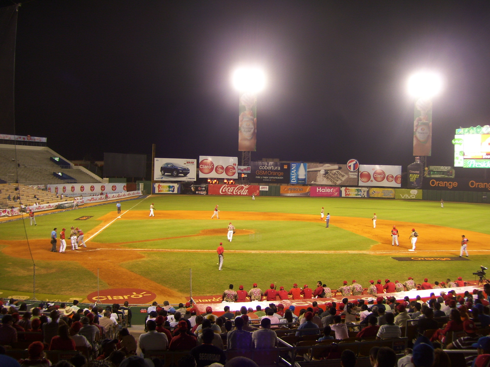
                      <h2>Quisqueya Stadium Juan Marichal</h2>
                      <p>Quisqueya stadium juan marichal is a baseball stadium in Santo Domingo, Dominican Republic. It is often used as a multi-use stadium. The Quisqueya holds about 14,469 people after its renovation.</p>
                      <p>One of the best places to experience Dominican baseball is at the home field of two of the DR’s six professional teams, Licey and Escogido . You can get tickets to most games by arriving shortly before the first inning; games between the hometown rivals or Licey and Aguilas sell out more quickly. Asking for the best seats available at the box office is likely to cost RD$1000 and put you within meters of the ballplayers and the between-innings dancers.</p>
                      <p>Scalpers also congregate along the road to the stadium and at the entrance. A taxi back to the Zona Colonial should run around RD$170. The stadium has been the site of big-name concerts like Justin Bieber in 2013.</p>
                    </div>

                    <div class="place uk-clearfix">
                      
                      <h2>Tres Ojos</h2>
                      <p>Los Tres Ojos (The Three Eyes in English) is the name given to a 50-Yard open-air limestone cave located in the Mirador del Este park, in the Santo Domingo Este municipality of the Dominican Republic. A series of three lakes, or ojos, the site is currently one of the most visited tourist attractions in the country. The caves are open from 9 am to 5 pm, and are illuminated at night by a myriad of colored lights.</p>
                    </div>

                    <div class="place uk-clearfix">
                      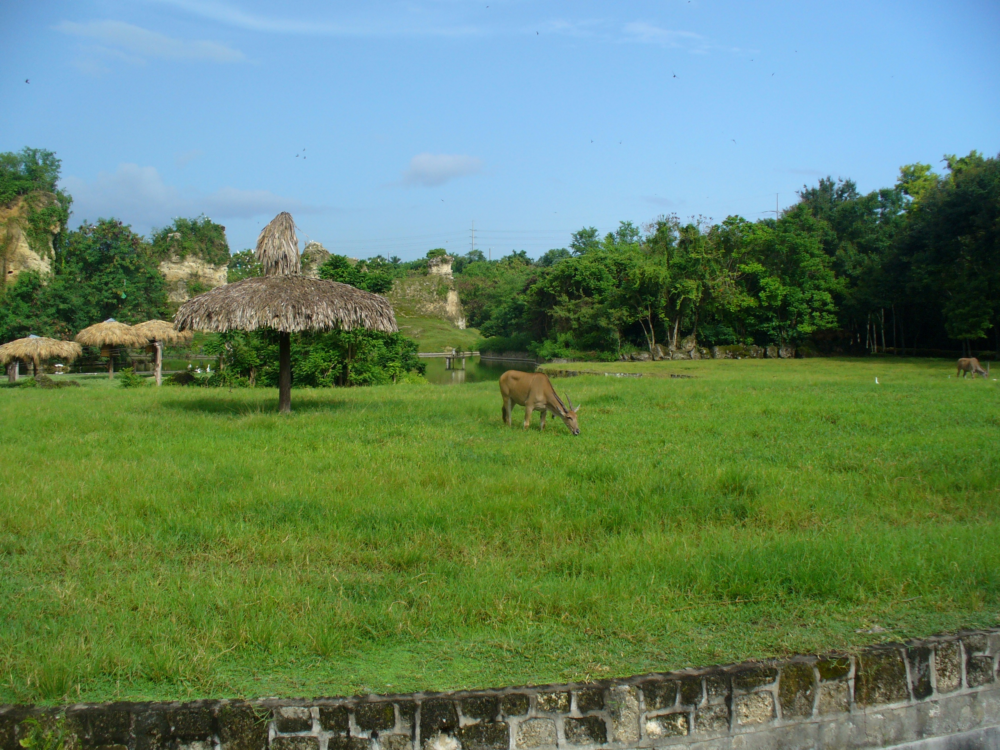
                      <h2>National Zoo</h2>
                      <p>The Dominican National Zoo Park was founded on 5 July 1975, is an educational, scientific and recreational public service seconded to the Ministry of Environment and Natural Resources.</p>
                      <p>Located in the northern part of Santo Domingo, Dominican National Zoo Park is a major public recreational areas of the city, with an area of over one million square meters.</p>
                      <p>Since its inception, The National Zoo has been committed to the conservation and preservation of wildlife, especially native, through its research on reproduction.</p>
                      <p>This park has a physical area of 1,250,000 square meters with 8 kilometers of roads, is one of the most important lungs of the urban area of Santo Domingo.</p>
                    </div>

                    <div class="place">
                      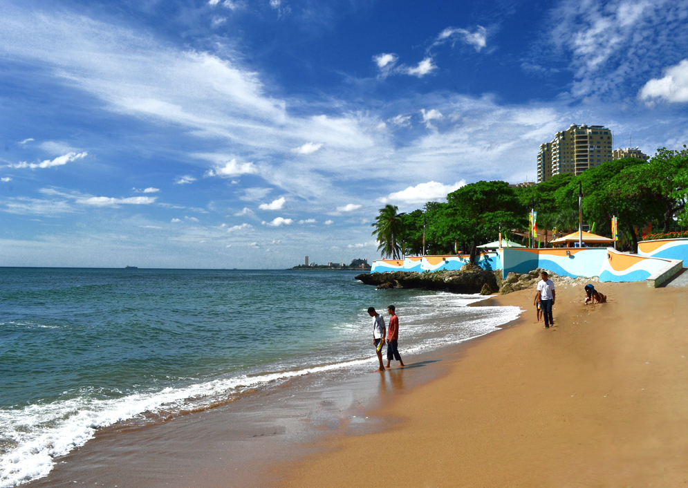
                      <h2>Guibia Beach</h2>
                      <p>Güibia is the only swimable beach in the city of Santo Domingo. This used to be the place to be before all the big hotels moved in then for many years it was forgotten and only used by surfers. President Leonel Fernández inaugurated the "New Guibia", an area measuring 13,479 square meters, on November 20, 2011.</p>
                      <p>The plaza includes sand volleyball courts, a free gym area, bike path, kiosks that sell foods and beverages, a kids play area, Wi-Fi internet connection and stage for concerts and other activities. There is even a gazebo extending out on the Caribbean with a boardwalk leading to it. They have lots of security around to keep it safe for all who visit. They are now working on cleaning up the water so it is safe to swim here again.</p>

                    </div>

                    <div class="place uk-clearfix">
                      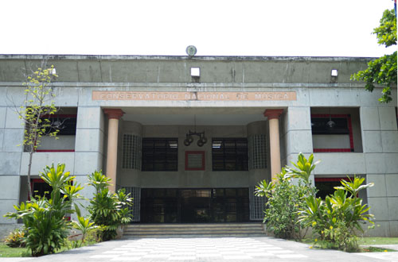
                      <h2>Music Conservatory</h2>
                      <p>Located in the heart of the city, in what once was a zoo and amusement park, it is now the most important music teaching center in the Dominican Republic, where 350 young people prepare themselves to become musicians.</p>
                      <p>If you walked through the halls of the Conservatory, you would observe children and young people sitting in chairs and on the floor, practicing their instruments, reviewing their musical scores and sharing in an atmosphere of joy and peace.</p>
                      <p>Those who are now the big names in music have attended this school. Alumni of the caliber of Juan Luis Guerra, Ramón Orlando, Michael Camilo José Antonio Molina and Dante Cucurullo, at some point satat the National Conservatory of Music (CNM for its acronym in Spanish).</p>
                    </div>

                      <div class="place uk-clearfix">
                        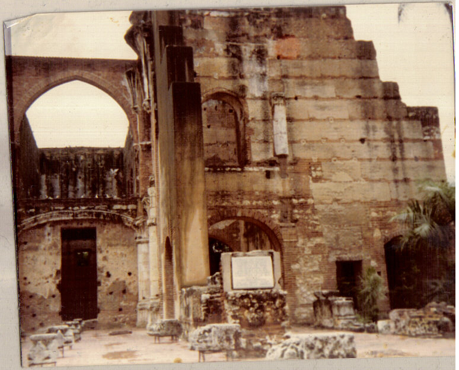
                        <h2>San Francisco's Ruins</h2>
                        <p>Monasterio de San Francisco in Santo Domingo de Guzmán, Dominican Republic, is a monastery that was built around 1508, with the arrival of the Franciscan fathers. The ruin is one of most important of the city. It is located in the Zona Colonial of Santo Domingo and has been declared a "heritage Dominican".</p>
                      </div>

                  <div class="uk-text-center">
                    <a href="http://bit.ly/PyRegister" class="uk-button uk-button-large  button-primary">Register now!</a>
                  </div>
                </div>
            </div>
        </div>
    </div>
